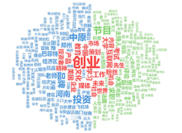

About Me
-
Master candidate
-
Advisor: Prof. Maosong Sun
-
Natural Language Processing and Computational Social Science Lab
State Key Lab of Intelligent Tech. & Sys.
National Lab for Information Sci. & Tech.
Department of Computer Sci. & Tech.
Tsinghua University, Beijing, China.
-
Research Interests: Information Visualization, Visual Analytics
-
Learning and trying to combine elements of computer science, visual art and storytelling
to help people understand themselves and the human world better.
Publications
Papers
-

Measuring and Visualizing the Interest Similarity between Microblog Users
Jiayu Tang, Zhiyuan Liu, Maosong Sun
International Conference on Web Age Information Management (WAIM) 2013.
(Accepted)
-

Creating Reflections in Public Emotion Visualization: Prototype Exploration on Traffic Theme
Jiayu Wu, Zhiyong Fu, Zhiyuan Liu, Xu Lin, Jiayu Tang, Jiajia Pan, Chen Zhao
ACM Creativity & Cognition 2013. Short paper.
(Accepted)
-

Portraying User Life Status from Microblogging Posts
[pdf]
Jiayu Tang, Zhiyuan Liu, Maosong Sun, Jiahua Liu
Tsinghua Science and Technology, 18(2):182-195, 2013. (Special Issue on Visualization and Computer Graphics)
-

A Survey of Text Visualization
[pdf]
Jiayu Tang, Zhiyuan Liu, Maosong Sun
Journal of Computer-Aided Design & Computer Graphics, 25(3):273-285, 2013. (in Chinese)
-

City Flow: Prototype Exploration for Visualizing Urban Traffic Conversations
[pdf]
Jiayu Wu, Zhiyong Fu, Zhiyuan Liu, Jiajia Pan, Huiling Long, Xu Lin, Haoqing He, Xinxiong Chen, Jiayu Tang
ASE/IEEE International Conference on Social Computing 2012.
Book
Jingmin Guan, Jiayu Tang, SQL Server Tutorials, 2nd edition,
Tsinghua University Press, 2011 (in Chinese)
Patent
Jiayu Tang, Maosong Sun, Zhiyuan Liu,
An Algorithm and A Device for Visualizing the Similarity between Text Corpus.
Application No.: 201310022589.0.
Software Registration
Shengtao Lei, Maosong Sun, Yang Liu, Jiayu Tang, Uighur Search Engine System (USES), Registration No.: 2012SR063705.
Demos
Activities
-
2012/08
Volunteer (Volunteers' Leader), KDD 2012 Summer School, Beijing, China.
-
2012/02-2012/05
Volunteer, China Rural Kids Care, Beijing, China.
-
2010/08-2011/07
Volunteer (Full-time Teacher), Qinghai University, Xining, Qinghai Province, China.
-
2009/09-10
Volunteer (Leader of Competition Supplies Assistants), China Open, Beijing, China.
-
2009/07-08
Volunteer (Leader of the 2nd stage), Service for Disaster-hit Areas in Sichuan Province, Beijing & Dujiangyan, China.
-
2009/07-08
Camper, Training Camp for Volunteer Leaders (held by Tsinghua University & the Hong Kong Federation of Youth Groups), Hong Kong, China.
-
2008/01-2008/09
Volunteer (Leader of Venue Operation Centre Assistants & Venue Management Volunteers @ National Aquatics Centre), Beijing Olympic Games & Paralympic Games, Beijing, China.
-
2007/08
Volunteer (Teacher & Volunteers' Leader), the Middle School of Xiangbi Village, Xiangyun County, Yunnan Province, China.
-
Some other short-time public benefit activities...
Awards
-
2013. Siebel Scholars for the Class of 2014, Siebel Foundation. (Tsinghua is the only Asian member of the Siebel Scholars program besides top American universities)
-
2012. Excellent Counsellor Award, Tsinghua University.
-
2012. Second class scholarship (GuangHua Scholarship), Tsinghua University.
-
2010. Scholarship on cultural activities, Tsinghua University.
-
2009. Excellent League Member, Tsinghua University.
-
2009. Scholarship on public benefit activities, Tsinghua University.
-
2008. External Publicity Award, Tsinghua University News Center.
-
2008. Advanced Individual of Beijing Olympic and Paralympic Volunteers, the Beijing Organizing Committee for the Games of the XXIX Olympiad.
-
2008. Excellent Olympic and Paralympic Volunteer, Tsinghua University.
-
2008. Excellent Student Cadre, Tsinghua University.
-
2007. Third class scholarship on social services, Tsinghua University.
Education
2006/08-2010/07. B.S. in Department of Computer Sci. & Tech., Tsinghua University.